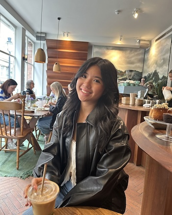

Postcards From Abigail

Welcome! My name is Abigail.
Growing up, I have lived in one place my whole life. While I love Ann Arbor, I took a big leap and moved out of state for college — my first time living away from my family, friends, and everything I've ever known. It was scary but I ended up loving it and realized that there are so many other places to explore. This inspired a goal of mine to travel and in my 20s.
So here is my little corner of the internet to document my adventures and pickup some postcards along the way. I hope you enjoy!